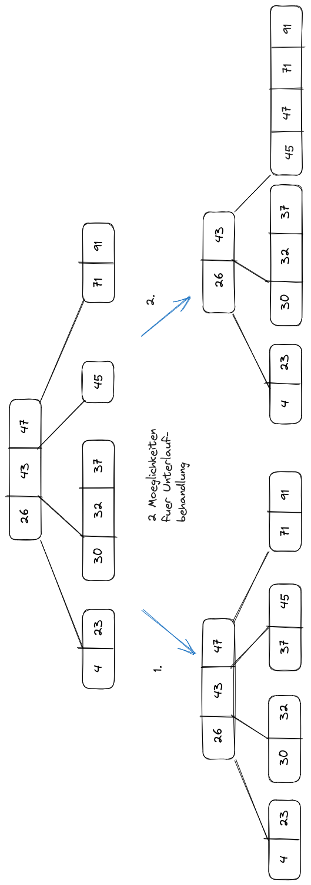
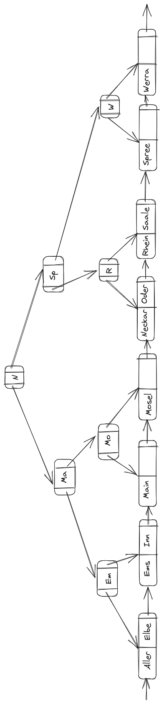

Blatt 8
Aufgabe 1
Satzlaenge
twitter_userAttribute Typ Satzlaenge idbigint8 byte follower_countinteger4 byte tweet_countinteger4 byte typchar(11)/char(5)“politician”/“lobby”12 byte (1 byte Overhead) created_attimestamp8 byte twitter_nametext12 byte real_nametext18 byte — — — \(\sum\) 54 byte Speicherplatz der Header
- Jede Page hat 24 Byte Header
- Jedes Tupel hat 23 Byte Header
D.h. jedes Tupel hat 54 Byte Nutzdaten + 23 Byte Header = 77 Byte.
Groesse der Bloecke im PostgreSQL:
select current_setting('block_size');| current_setting |
|---|
| 8192 |
select count(*)
from twitter_user| count |
|---|
| 1825 |
Anzahl der Tupel pro Seite ca.:
round(8192 / 77)[1] 106Somit ist die Anzahl der Seiten ungefaehr:
round(1825 / 106)[1] 17- Anzahl der Seiten der Relation `twitter_user’:
select relname, relpages
from pg_class
where relname = 'twitter_user'| relname | relpages |
|---|---|
| twitter_user | 22 |
Also in Wirklichkeit werden 22 Seiten gebraucht statt 17 Seiten. D.h. mehr Speicher. Die Gruende dieser Abweichung sind u.a. mehr Speicher fuer:
- Pageheader
- Zeiger auf die Tupel
- Special-/Free Space in Pages
- Optionalen Zusatzelementen wie Null Bitmap in den Tuples
Aufgabe 2
- B-Baum 1.1 Figure 1
- B-Baum 1.2 Figure 2

Aufgabe 3
- B+-Baum 3.1 Figure 3

- Die Elemente in der sortierten Reihenfolge in den B+ Baum einfuegen, aber nicht durch ein normales Insert, sondern direkt an das Blatt ganz rechts einfuegen. Dadurch spart man sich die look-up Operation \(\mathcal{O}(\log_m(n))\) des insert, die ein groeseres Element als die bisherigen sowieso ganz rechts in Baum ablegen wuerde.